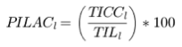
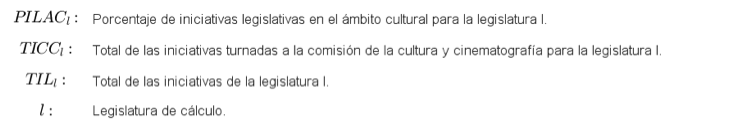

CcE04 - Porcentaje de iniciativas legislativas presentadas en al ámbito de cultura
Porcentaje de iniciativas legislativas en el ámbito cultural para la legislatura
Porcentaje
Nota: [Aquí va la nota de los datos del indicador, sí es que la hay]
Fuente: [Aquí va la fuente de los datos del indicador, sí es que la hay]
| Definición | Porcentaje de las iniciativas legislativas presentadas por la Comisión de Cultura y Cinematografía, por periodo legislativo, en la Cámara de Diputados. |
| Fórmula |  |
| Elementos del cálculo |  |
| Fuente de la fórmula | Fórmula descriptiva elaborada por el PUDH. |
| Estado de Validación de la fórmula | En datos.gob.mx |
| Unidad de Medida | Porcentaje |
| Referencia | Indicador calculado a partir del Servicio de Información para la Estadística Parlamentaria de la Cámara de Diputados. |
[Aquí iría una tabla que represente los datos para el cálculo]
Descargar datos
Nombre del indicicador
Descripción del indicador
Instrucción responsable de la información
Formatos
Indicador CcE04
Porcentaje de iniciativas legislativas presentadas en al ámbito de cultura
Diputados